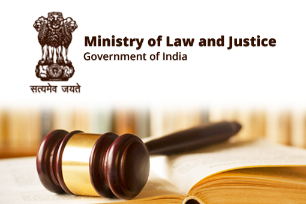

The DAC&FW is organized into 27 Divisions and has five attached offices and twenty-one subordinate offices which are spread across the country for coordination with state level agencies and implementation of Central Sector Schemes in their respective fields. Further, one Public Sector Undertakings,nine autonomous bodies, ten nationallevel cooperative organizations and two authorities are functioning under the administrative control of the Department.
Click HereThe mandate of the Department of Commerce is regulation, development and promotion of India’s international trade and commerce through formulation of appropriate international trade & commercial policy and implementation of the various provisions thereof. The basic role of the Department is to facilitate the creation of an enabling environment and infrastructure for accelerated growth of international trade.
Click HereThe Ministry of Home Affairs (MHA) discharges multifarious responsibilities, the important among them being - internal security, border management, Centre-State relations, administration of Union Territories, management of Central Armed Police Forces, disaster management, etc. Though in terms of Entries 1 and 2 of List II – ‘State List’ – in the Seventh Schedule to the Constitution of India, ‘public order’ and ‘police’ are the responsibilities of States, Article 355 of the Constitution enjoins the Union to protect every State against external aggression and internal disturbance and to ensure that the Government of every State is carried on in accordance with the provisions of the Constitution.
Click Here

Ministry of Law and Justice is the oldest limb of the Government of India dating back to 1833 when the Charter Act 1833 enacted by the British Parliament. The said Act vested for the first time legislative power in a single authority, namely the Governor General in Council. By virtue of this authority and the authority vested under him under section 22 of the Indian Councils Act 1861 the Governor General in Council enacted laws for the country from 1834 to 1920.
Click HereThe essence of Human Resource Development is education, which plays a significant and remedial role in balancing the socio-economic fabric of the Country. Since citizens of India are its most valuable resource, our billion-strong nation needs the nurture and care in the form of basic education to achieve a better quality of life. This warrants an all-round development of our citizens, which can be achieved by building strong foundations in education. In pursuance of this mission, the Ministry of Human Resource Development (MHRD) was created on September 26, 1985, through the 174th amendment to the Government of India (Allocation of Business) Rules, 1961.
Click Here